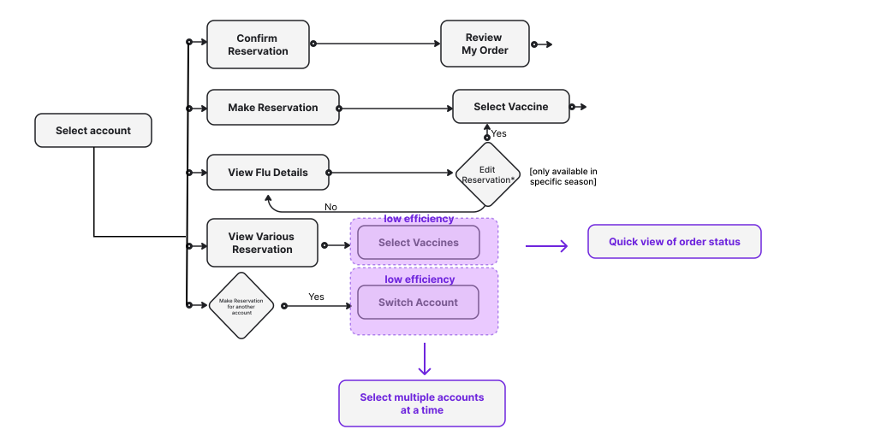
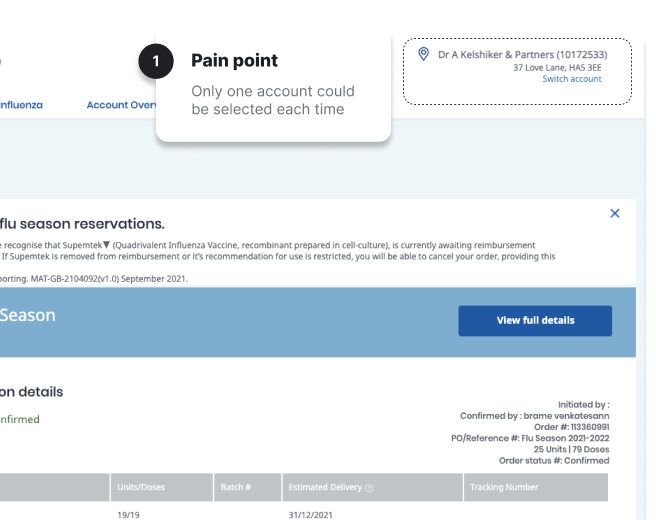
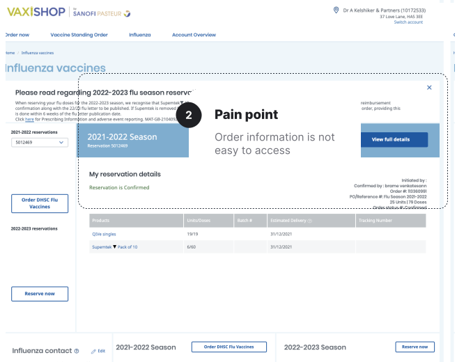
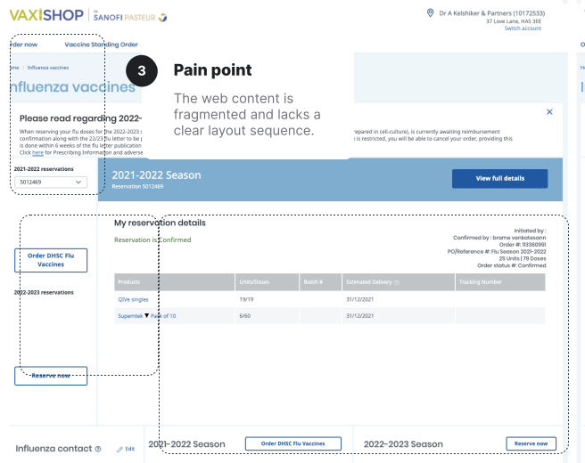
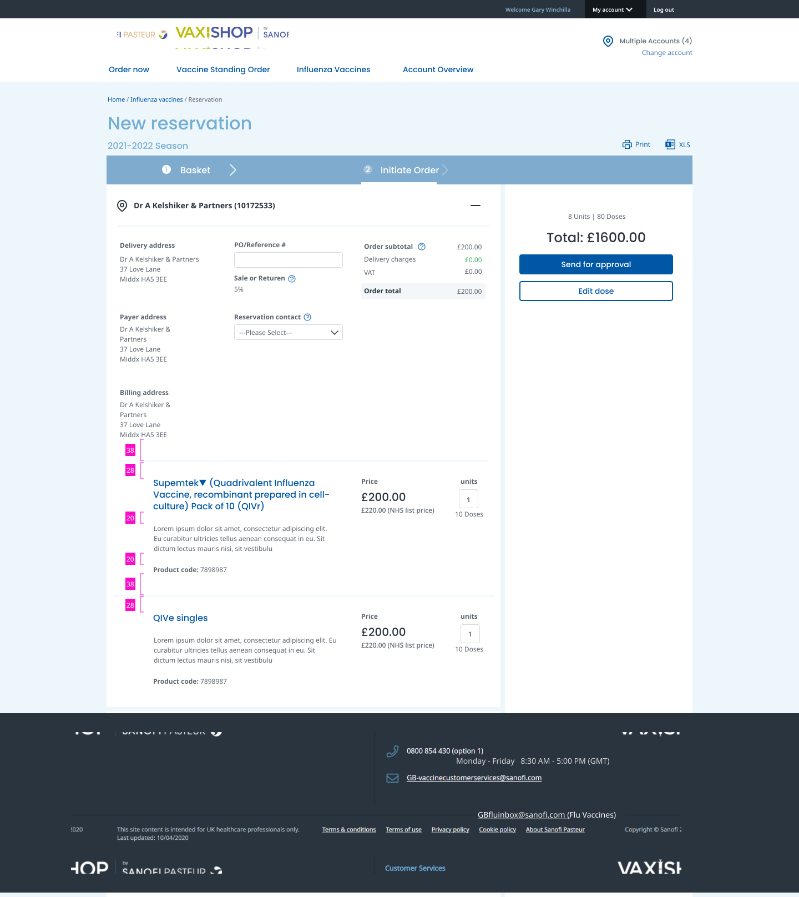
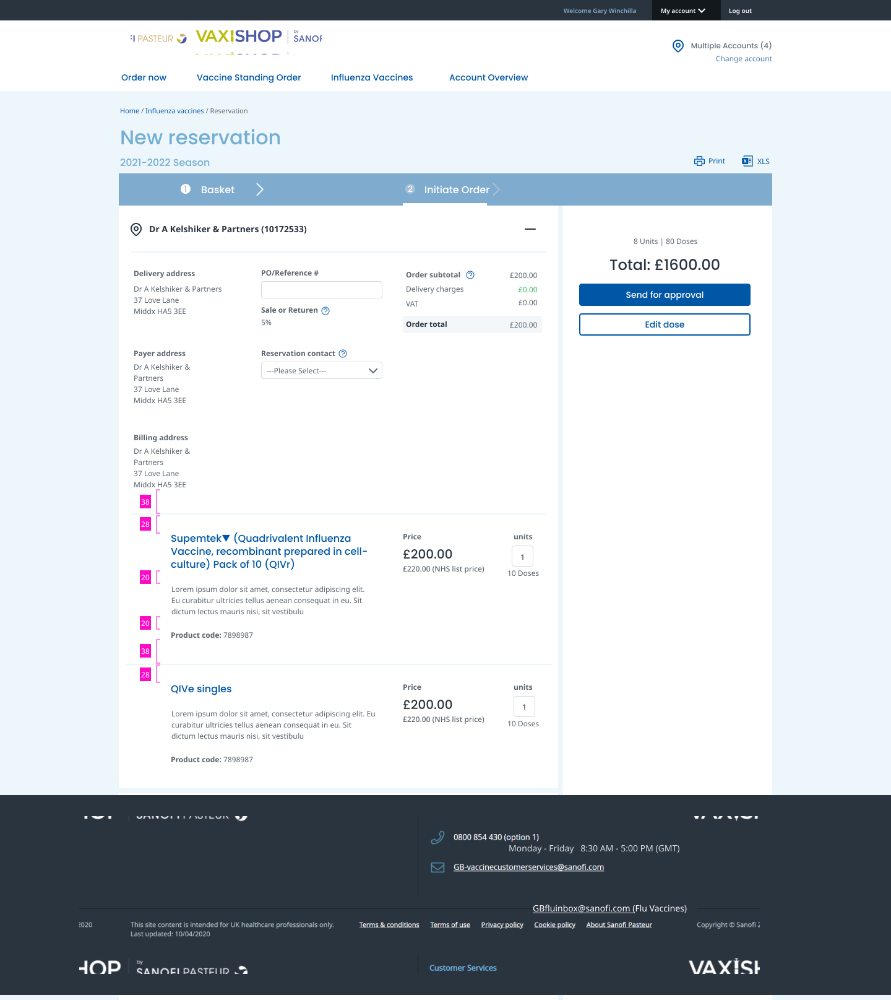

CHALLENGE
There are two general types of user needs: efficiency and entertainment. In this project, I focused on solving efficiency issues, as an efficient solution fosters positive user emotions. To address the current challenges, I analyzed the flows for making and editing reservations, as well as checking order status. The key issue was users' difficulty in accessing multiple accounts, leading to a cumbersome experience.
How might we simplify the workflow while ensuring a smooth order process?

Also, through our user research data and analysis, we identified 3 major points in this current Vaxishop website.
Pain point 01
Each time only one account is allowed to be selected
Rationale
Through our analysis of the current user flow, we have identified an opportunity to introduce multiple account selections. This enhancement has the potential to significantly improve overall efficiency.

Pain point 02
No central view of the order status.
Rationale
Through user interviews, we observed that users frequently need to access the order information, and the current method of accessing it is cumbersome and inefficient.

Pain point 03
Accessibility issues
Rationale
During the heuristic evaluation, we identified several accessibility issues with the current website. For instance, the layout lacks clear focal points for eye tracking, making it difficult for users to identify key information and make informed decisions quickly.



 
